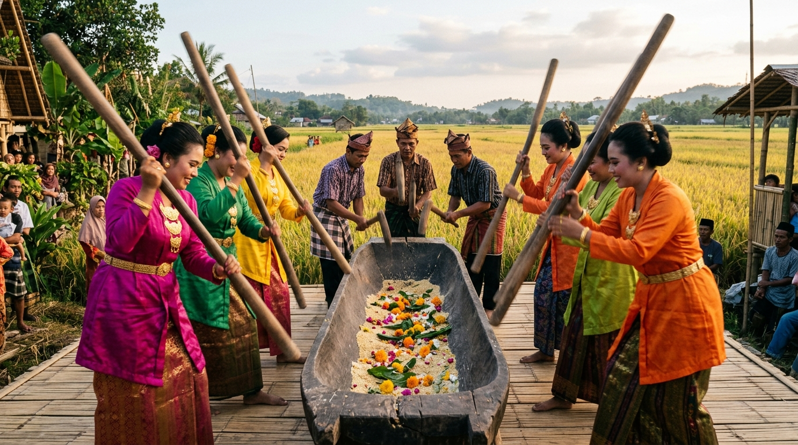
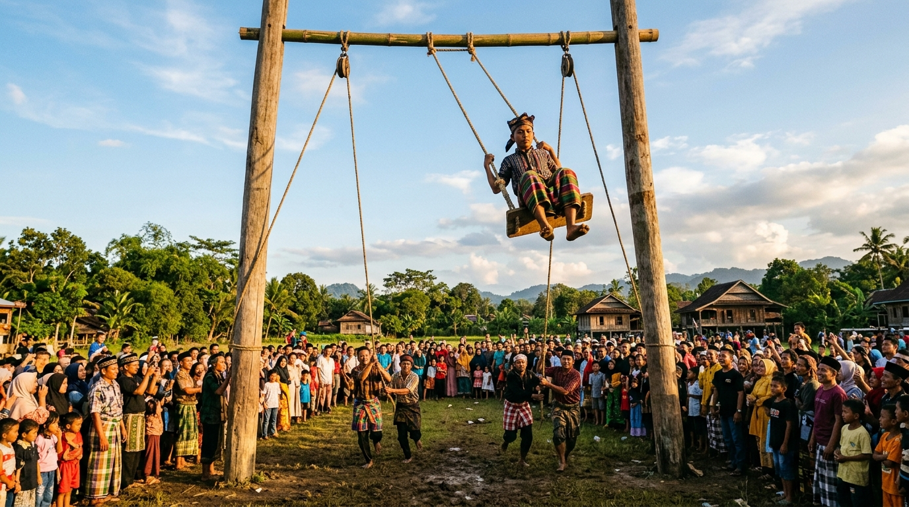
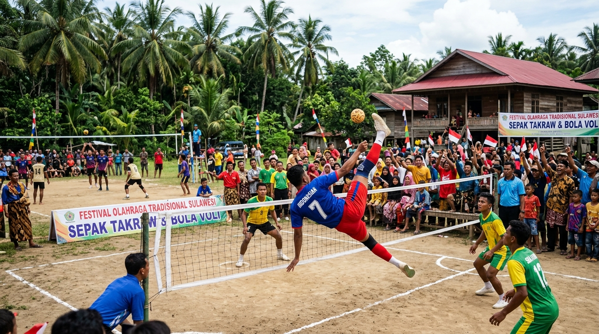

Tradisi Tahunan · Calodo, Cenrana · Sulawesi Selatan
Wujud syukur atas hasil padi dan kebun yang diturunkan leluhur,
dirayakan setiap tahun dengan penuh khidmat dan kegembiraan.
Mengenal Tradisi
Pesta Panen Calodo Cenrana adalah tradisi syukur tahunan yang berakar kuat dalam kehidupan agraris masyarakat Bugis di Cenrana, Bone. Dikhususkan untuk warga Calodo — berbeda dengan tradisi di Tellu Siattinge — pesta ini merayakan berkah dari sawah dan kebun yang telah memberikan kehidupan.
Dari pagi hingga sore, masyarakat berkumpul dalam satu lapangan terbuka untuk menjalankan tiga rangkaian kegiatan utama: ritual penumbukan gabah berirama dalam Mappadendang, atraksi ayunan raksasa Mappere, dan babak final pertandingan olahraga yang telah dipersiapkan jauh sebelum hari pesta.
Jadwal Kegiatan
Seluruh rangkaian berlangsung dari pagi hingga malam dalam satu hari pelaksanaan.
Pembukaan pesta panen dengan tradisi penumbukan gabah berirama. Enam perempuan berbaju bodo berdiri di kanan-kiri lesung kayu berbentuk perahu, memukul secara berselang-seling dengan tongkat panjang. Tiga pria berposisi segitiga di ujung belakang lesung memberi variasi irama dan ciri khas suara.
Berlangsung ±30 menit per sesi · Hingga pukul 12.00Mappadendang berakhir. Masyarakat beristirahat dan makan siang bersama. Momen silaturahmi antar warga dari berbagai penjuru yang datang menyaksikan pesta panen.
Jeda siang · Menunggu waktu DhuhurAtraksi paling ditunggu-tunggu. Ayunan raksasa setinggi ±30 meter mengayun peserta ke udara. Dua orang pemegang tali di kanan-kiri berlari sekuat-kuatnya untuk mendorong ayunan semakin tinggi. Setiap sesi berlangsung 7 kali ayunan sebelum peserta berganti.
Sistem tim bergiliran · Berlangsung beberapa jamBabak final Voli Putra dan Sepak Takraw Putra. Kompetisi ini sudah dimulai jauh sebelum hari pesta, sehingga saat hari-H tiba, yang tersaji adalah pertandingan puncak paling mendebarkan.
Final Voli Putra · Final Sepak Takraw PutraUpacara penutup pesta panen dengan penyerahan hadiah kepada para juara cabang olahraga. Malam yang hangat dan meriah sebagai penutup seluruh rangkaian acara.
Penutupan resmi pesta panenKegiatan Pertama · 09.00 – 12.00
Penumbukan gabah berirama sebagai ritual syukur atas keberhasilan panen

Lesung berbentuk perahu dengan isian beras, bunga, dan dedaunan. Perempuan berbaju bodo berdiri di kanan-kiri, tiga pria berposisi segitiga di ujung belakang.
Lesung dalam Mappadendang Calodo berbentuk memanjang seperti perahu dengan bagian belakang yang lebih tipis dan kecil. Di dalam badan lesung diisi dengan gabah, bunga-bunga segar, dan beberapa helai dedaunan sebagai simbol kesuburan dan syukur kepada Yang Maha Kuasa.
Enam perempuan berbaju bodo berdiri berhadapan di sisi kanan dan kiri lesung, memukul dengan tongkat panjang secara berselang-seling sehingga suara dan tempo menyatu harmonis. Di ujung belakang lesung, tiga pria membentuk formasi segitiga — satu di tengah belakang, satu di kanan, satu di kiri — memukul bagian belakang yang lebih kecil untuk memberi variasi irama dan ciri khas suara yang menjadi identitas Mappadendang Calodo.
Orang di sisi kiri memainkan pola dua ketukan, sementara sisi kanan memainkan tiga ketukan. Keduanya berselang-seling menciptakan melodi perkusi yang kaya. Satu sesi berlangsung sekitar 30 menit, menghasilkan suara tumbukan yang enak didengar dan terasa khas oleh seluruh masyarakat yang hadir.
Kegiatan Kedua · Setelah Dhuhur
Ayunan raksasa — puncak atraksi yang memukau ribuan penonton

Dua tiang kayu besar kanan-kiri dengan tali tebal. Peserta diayun tinggi sementara ribuan warga menyaksikan dengan penuh kekaguman.
Mappere menggunakan dua batang kayu besar yang ditancapkan kokoh di tanah pada sisi kanan dan kiri. Di bagian atas, dipasang bambu sebagai penyangga tempat roll tali. Dari sana, dua tali besar diturunkan ke kanan dan kiri, diikatkan pada kursi kayu tempat duduk orang yang akan diayun.
Dua orang pemegang tali berdiri di kanan dan kiri. Mereka berlari mundur-maju secara kompak sambil menarik-mendorong tali memanjang. Semakin kompak keduanya bergerak dan semakin jauh mereka berlari, semakin tinggi dan cepat ayunan bergerak ke udara.
Peserta dibagi dalam beberapa tim yang akan bergiliran mengayun secara bergantian.
2 pemegang tali kanan-kiri berlari kompak, mendorong ayunan semakin tinggi setiap langkah.
Setiap sesi berlangsung selama tujuh kali ayunan penuh sebelum tim berikutnya masuk.
Ayunan ditahan oleh dua orang lain, lalu peserta berganti untuk sesi berikutnya.
Kegiatan Ketiga · Sore Hari
Pertandingan puncak yang sudah dipersiapkan jauh sebelum hari pesta

Aksi final yang penuh semangat dengan dukungan seluruh masyarakat Calodo
Kompetisi olahraga sudah bergulir sejak hari-hari sebelum pesta panen. Ketika hari pesta tiba, yang digelar adalah babak final — pertandingan paling menentukan yang ditunggu-tunggu seluruh warga.
Final bergengsi antara dua tim terbaik yang telah melewati seluruh fase penyisihan. Dukungan penonton membakar semangat para atlet di lapangan.
Olahraga warisan Nusantara dengan gerakan akrobatik memukau. Tendangan bicycle kick para atlet selalu menjadi sorotan utama penonton.
Di malam harinya, seluruh rangkaian pesta panen ditutup dengan upacara penyerahan penghargaan kepada para juara kedua cabang olahraga — momen yang menghangatkan seluruh masyarakat Calodo Cenrana.